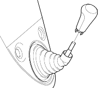
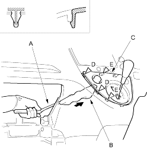
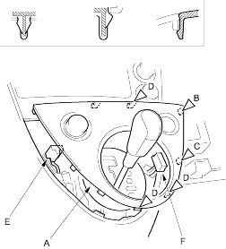

- Take care not to scratch the dashboard and related parts.
- Put on gloves to protect your hands.
- Remove the glove box (see page 20-220).
- M/T: Remove the shift knob.

- Using a wrench (A) wrapped with shop towel (B), carefully insert a wrench from the glove box opening and push the shift lever trim (C) from under the trim to release the clips (D) and hooks (E) of the left side.
Fastener Locations D  : Clip, 2
: Clip, 2E : Hook, 2

- Pull out the shift lever trim (A) by hand to release the remaining clips (B, C) and hooks (D) and disconnect the cigarette light connector (E) and hazard warning switch connector (F), then remove the trim.
| Fastener Locations | ||
| B : Clip, 1 |
C : Clip, 1 |
D : Hook, 3 |

- Install the trim in the reverse order of removal and make sure each connector is plugged in properly.